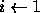
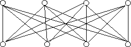

CS580 - Homework 12 Due 12/10/97
1. Consider the following graph coloring algorithm:
Input: G=(V,E), where V = { v1, ..., vn }
Output: A coloring of G.
for i  1 to n do
c 1
while there is a vertex adjacent to vi and colored c
do c <- c + 1 end
color vi with c
end
and the following graph:
